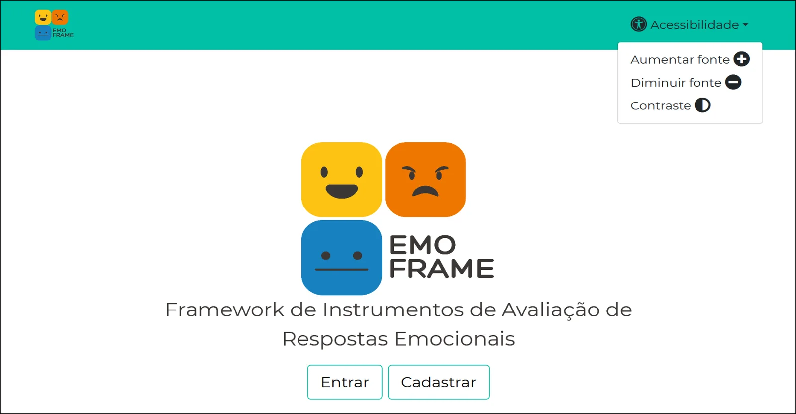
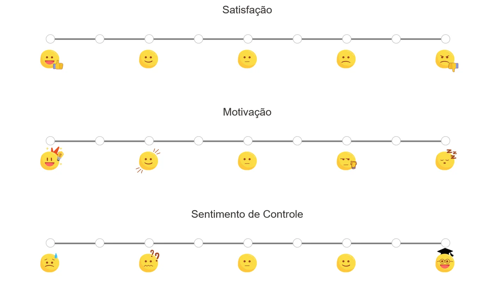

Resumo
Profissionais de computação costumam criar sistemas para outras áreas, como a saúde, mas a parceria com os especialistas geralmente acaba antes do uso real. Com isso, quem desenvolve fica sem retorno sobre como as pessoas se sentem ao usar a solução. O EmoFrame reúne, em formato digital, instrumentos para avaliar respostas emocionais e orienta a escolha do instrumento mais adequado.
Combinei quatro formas de avaliação. Os questionários deram notas altas, e foram as entrevistas e a avaliação heurística que mostraram onde a experiência falhava.
O problema
- Avaliar a resposta emocional de usuários é difícil para profissionais de computação, que raramente têm formação para isso.
- Muitos instrumentos validados existem só em papel, o que facilita perder respostas e atrasa a análise.
- A falta de retorno depois da entrega impede melhorar a solução a partir da experiência real.
Pergunta de pesquisa
Uma ferramenta que reúna instrumentos digitais de avaliação emocional ajuda profissionais a avaliar seus sistemas com mais facilidade, sem perder a qualidade dos instrumentos originais?
Processo


1. Entender o que já existe
Fiz um mapeamento sistemático dos instrumentos de avaliação de respostas emocionais. Ele orientou a escolha dos instrumentos do framework e foi publicado no HCII 2022.
2. Construir junto com quem usa
Adotei design participativo com prototipagem evolutiva. Profissionais de Psicologia e Gerontologia participaram de oficinas e revisaram os protótipos várias vezes até cada instrumento ser validado. No fim, o framework reunia sete instrumentos, como SAM, PANAS e SUS.
3. Avaliar de quatro formas complementares
| Avaliação | Com quem | O que buscava |
|---|---|---|
| Especialistas de domínio | Psicólogo e gerontólogas, incluindo a criadora de um dos instrumentos | Fidelidade ao instrumento original |
| Teste de usabilidade | 11 pessoas de Design, IHC e Psicologia, em sessões presenciais com 11 tarefas, SUS e entrevista | Facilidade de uso e percepção de valor |
| Avaliação heurística | 3 especialistas em IHC, com as 10 heurísticas de Nielsen, personas e escala de severidade | Problemas de interface, por prioridade |
| Consolidação | Reunião com os 3 avaliadores | Chegar a um consenso sobre os problemas e a gravidade de cada um |
Principais achados

1. As notas foram altas, mas não contaram tudo
Todos os 11 participantes deram notas acima de 80 no SUS, entre 86 e 100. Mesmo assim, as entrevistas e a avaliação heurística encontraram problemas concretos.
2. O valor percebido estava na análise automática
O benefício mais citado foi não precisar calcular os resultados à mão.
"O principal benefício é a facilidade de aplicação dos questionários, principalmente para a fase de análise, pois o sistema já entrega os resultados calculados." (P3)
"Acho que o EmoFrame pode democratizar o acesso às ferramentas de avaliação, além de automatizar a análise dos resultados." (P5)
3. Faltava feedback do sistema
Mensagens de erro ausentes ou pouco claras apareceram no teste e na avaliação heurística.
"Quando cometi um erro no e-mail, ele não notificou qual era o erro, e na busca pelo nome em 'Resultados' não apareceu aviso como 'Não encontrado'." (P9)
4. Faltava informação sobre os instrumentos
A avaliação heurística começou com 24 problemas, que caíram para 20 depois da consolidação. Os três mais graves (severidade 4) estavam em prevenção de erros, flexibilidade de uso e ajuda e documentação. Para os avaliadores, a falta de informação no início e em cada instrumento foi o que mais prejudicou a experiência. Isso confirmou o que o teste de usabilidade já indicava.
5. Os resultados só podiam ser vistos um a um
"A principal dificuldade seria a compilação dos dados da pesquisa, pois apresenta informações completas, mas apenas individualmente, dificultando a comparação." (P3)
6. Na visão dos especialistas, o digital resolve problemas do papel
"No papel, há possibilidade de termos 'missings' [...]. Além disso, fica quase impossível embaralhar os itens a cada impressão. Esses dois aspectos não acontecem no digital." (especialista em Psicologia)
A criadora do Plano de Atenção Gerontológica (PAGe), um instrumento com 104 questões, ajudou a ajustar a versão digital. Ela pediu, por exemplo, para separar renda individual e familiar, abrir um campo livre quando a pessoa marca "Outro" e manter as instruções de aplicação em cada questão.
O que mudou a partir disso
| Achado | Decisão |
|---|---|
| Problemas de severidade 4 | Resolver primeiro, seguindo a ordem de gravidade |
| Falta de informação sobre os instrumentos | Incluir tutorial, nome completo, versão e documentação de cada instrumento |
| Mensagens de erro ausentes | Dar retorno claro no login, nas buscas e nos campos obrigatórios |
| Resultados só individuais | Planejar uma visão comparativa dos dados |
| Ajustes pedidos pelos especialistas | Incorporados aos instrumentos digitais, incluindo o PAGe |
O EmoFrame virou a base do meu doutorado, em que o framework foi ampliado para apoiar todo o planejamento de avaliações.
Limitações
- Os participantes do teste de usabilidade eram do próprio grupo de pesquisa e conheciam bem a área, o que provavelmente contribuiu para as notas altas no SUS.
- O teste foi feito durante a pandemia, com protocolos sanitários e sessões presenciais em ambiente controlado.
O que eu aprendi
Uma nota alta no SUS não quer dizer que não há problemas. Combinar questionário, entrevista e avaliação heurística mostrou o que cada método deixava passar, e quando os métodos concordaram, ficou mais claro o que corrigir primeiro. Também aprendi que, num projeto com outras áreas, a validação de especialistas de domínio é tão importante quanto a usabilidade: um instrumento digital fácil de usar, mas infiel ao original, não serve para ninguém.